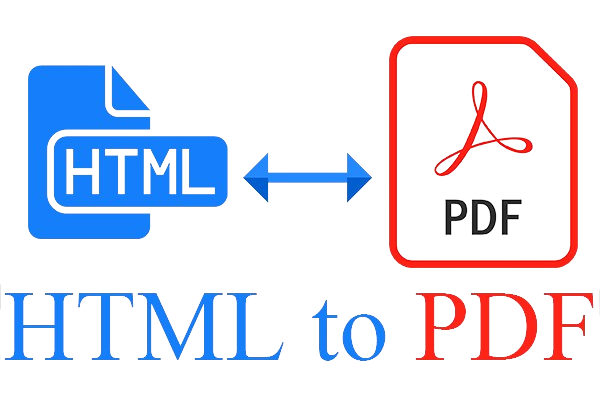

<div *ngIf="loaderService.isLoading | async" class="loader-container">
  <mat-spinner style="top: 50%; left: 50%;"></mat-spinner>
</div>
<div class="mainPage">
  <h1 style="font-family: Arial, sans-serif;">Convert files between HTML and PDF format</h1>
  <hr>
  

  <h3 style="font-family: Arial, sans-serif;">Please select conversion option</h3>

  <select (change)="selectionChanged($event)">
    <option class="opts" value="">Select</option>
    <option class="opts" value="htmltopdf">HTML to PDF</option>
    <option class="opts" value="pdftohtml">PDF to HTML</option>
  </select>


    <div class="button-container" *ngIf="showHTMLConverteroptions">
      <br>
      <br>
      <input class="inpFile" type="file" accept=".html" (change)="htmlFileUploadChange($event)">
      <br>
      <button class="btn" (click)="downloadAsPdf()">Download PDF</button>
    </div>


  <div class="button-container" *ngIf="showPDFConverteroptions">
    <br>
    <br>
    <input class="inpFile" type="file" accept=".pdf" (change)="pdfFileUploadChange($event)">
    <br>
    <button class="btn" (click)="downloadAsHtml()">Download HMTL</button>
  </div>
  

  <router-outlet></router-outlet>
</div>